IMPORT OCH PRISUPPDATERING VILMA OCH EXCEL FILER
Spara prisfilen på P:\
Vilmafiler döps till 'vilma' och excelfiler till 'prisfil'

------------------------------------------------------------------------------------------
Gå till 'Länkar'
Välj 'Inläsning Vilma Netto' om prisfilen innehåller Nettopriser
Välj 'Inläsning Vilma Bas' om prisfilen innehåller Baspriser
Välj 'Inläsning Excelfil' om du har en excelfil.

------------------------------------------------------------------------------------------
Starta Sortimentsunderhåll

------------------------------------------------------------------------------------------
Välj fliken 'Importtabell'
Klicka på knappen '1. Utför Matchning'
Kontrollera så att leverantören har rätt Refid. Om inte ändra till Vilmafilens levNr i
kundregistret.

------------------------------------------------------------------------------------------
Välj i rullisten 'Visa matchning - EAN samma lev'
Kontrollera 'EAN samma leverantör', rätta de rader som är fel-
Klicka på '1.Utför Matchning' och kolla så 'EAN samma lev' är 0

------------------------------------------------------------------------------------------
Skapa ett nytt urval och döp det till 'leverantör_ååmmdd'

------------------------------------------------------------------------------------------
Välj fliken 'Hantera Urval'

------------------------------------------------------------------------------------------
UPPDATERA BEFINTLIGA PRODUKTER PRIO 1
Läs in samtliga befintliga produkter.
I dialogen 'Hämta data' välj i rullisten Datakälla 'Importtabell (Produkt finns)'

------------------------------------------------------------------------------------------
Klicka på 'Hämta data'

------------------------------------------------------------------------------------------
Skapa ett filter 'Priokod lika med 1' för att
maekera produkter med priokod 1.
Spara filtret
klicka på 'Markera'

------------------------------------------------------------------------------------------
Välj fliken 'Produktrader'
Kolla över och gör eventuella ändringar, så som Kalkylklass, hanteringskod och tag bort
eventuella rabatter i nettofil, med hjälp av 'Detaljinfo
produkt'

------------------------------------------------------------------------------------------
Kalkylera markerade rader
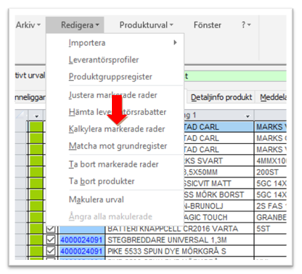
------------------------------------------------------------------------------------------
Välj fliken Hantera urval
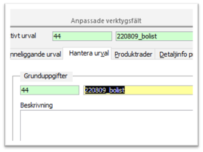
------------------------------------------------------------------------------------------
Uppadatera befintliga produkter
I dialogen 'Uppdatera befintliga produkter' välj i rullisten Mall: prisuppdatering
Klicka på 'Uppdatera'
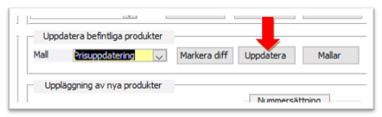
------------------------------------------------------------------------------------------
Nu har vi uppdaterat befintliga produkter med aktuell leverantör som har priokod 1.
Klicka på 'Avmarkera'
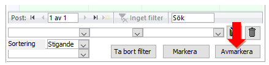
------------------------------------------------------------------------------------------
UPPDATERA BEFINTLIGA PRODUKTER
PRIOKOD EJ LIKA MED 1
Skapa ett filter 'Priokod - ej lika med - 1' för
att markera produkter prio ej lika med 1.
Spara filtret
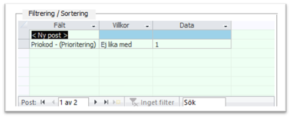
------------------------------------------------------------------------------------------
Klicka på 'Markera'
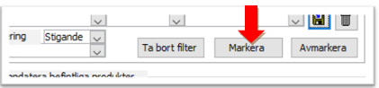
------------------------------------------------------------------------------------------
I dialogen 'Uppdatera befintliga produkter' Välj i rullisten 'Mall' 'Prisuppdatering ej prio 1'
Klicka på 'Uppdatera'
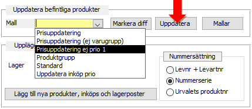
Nu har vi uppdaterat befintliga produkter med aktuell leverantör som har priokod ej lika med 1.
Tag bort filtret och markera samtliga produkter. Välj Redigera, 'Ta bort markerade rader'
------------------------------------------------------------------------------------------
EAN ANNAN LEVERANTÖR
EAN annan leverantör är nya produkter som finns hos annan levberantör i Pengvin. Inköps och
lagerpost måste läggas uppo för aktuell leverantör
Rensa produkturvalet och hämta produkter
I dialogen 'Hämta data' välj i rullisten Datakälla 'Importtabell (EAN annan leverantör).'
Klicka på 'Hämta data'.
Klicka på 'Markera' för att markera samtliga produkter.
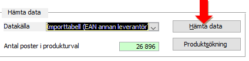
------------------------------------------------------------------------------------------
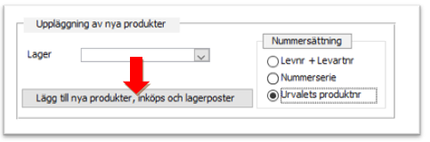
I dialogen 'Uppläggning av nya produkter' lämna 'Lager' rutan tom och välj 'Urvalets produktnr'
då produkterna redan har produktnummer i Pengvin.
Klicka på 'Lägg till produkter, inköps och lagerposter', vi skapar nu inköps och lagerposter för
produkterna.
------------------------------------------------------------------------------------------
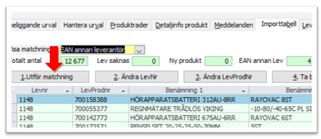
Välj fliken Importtabell och klicka på 'Utför matchning'
------------------------------------------------------------------------------------------
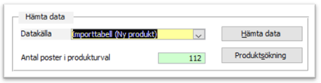
------------------------------------------------------------------------------------------
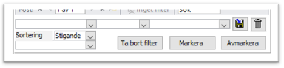
------------------------------------------------------------------------------------------